MAXimal
добавлено: 16 Mar 2011 0:51
редактировано: 4 Feb 2013 0:51
Содержание [скрыть]
Суффиксное дерево. Алгоритм Укконена
Эта статья — временная заглушка, и не содержит никаких описаний.
Описание алгоритма Укконена можно найти, например, в книге Гасфилда "Строки, деревья и последовательности в алгоритмах".
Реализация алгоритма Укконена
Этот алгоритм строит суффиксное дерево для данной строки длины  за время 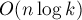, где
за время 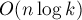, где  — размер алфавита (если его считать константой, то асимптотика получается
— размер алфавита (если его считать константой, то асимптотика получается  ).
).
Входными данными для алгоритма являются строка  и её длина , которые передаются в виде глобальных переменных.
и её длина , которые передаются в виде глобальных переменных.
Основная функция — 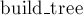, она строит суффиксное дерево. Дерево хранится в виде массива структур 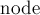, где 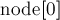 — корень суффиксного дерева.
В целях простоты кода рёбра хранятся в тех же самых структурах: для каждой вершины в её структуре записаны данные о ребре, входящем в неё из предка. Итого, в каждой хранятся:  , определяющие метку 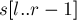 ребра в предка, 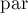 — вершина-предок, 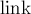 — суффиксная ссылка, 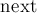 — список исходящих рёбер.
, определяющие метку 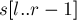 ребра в предка, 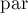 — вершина-предок, 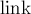 — суффиксная ссылка, 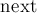 — список исходящих рёбер.
string s; int n; struct node { int l, r, par, link; map<char,int> next; node (int l=0, int r=0, int par=-1) : l(l), r(r), par(par), link(-1) {} int len() { return r - l; } int &get (char c) { if (!next.count(c)) next[c] = -1; return next[c]; } }; node t[MAXN]; int sz; struct state { int v, pos; state (int v, int pos) : v(v), pos(pos) {} }; state ptr (0, 0); state go (state st, int l, int r) { while (l < r) if (st.pos == t[st.v].len()) { st = state (t[st.v].get( s[l] ), 0); if (st.v == -1) return st; } else { if (s[ t[st.v].l + st.pos ] != s[l]) return state (-1, -1); if (r-l < t[st.v].len() - st.pos) return state (st.v, st.pos + r-l); l += t[st.v].len() - st.pos; st.pos = t[st.v].len(); } return st; } int split (state st) { if (st.pos == t[st.v].len()) return st.v; if (st.pos == 0) return t[st.v].par; node v = t[st.v]; int id = sz++; t[id] = node (v.l, v.l+st.pos, v.par); t[v.par].get( s[v.l] ) = id; t[id].get( s[v.l+st.pos] ) = st.v; t[st.v].par = id; t[st.v].l += st.pos; return id; } int get_link (int v) { if (t[v].link != -1) return t[v].link; if (t[v].par == -1) return 0; int to = get_link (t[v].par); return t[v].link = split (go (state(to,t[to].len()), t[v].l + (t[v].par==0), t[v].r)); } void tree_extend (int pos) { for(;;) { state nptr = go (ptr, pos, pos+1); if (nptr.v != -1) { ptr = nptr; return; } int mid = split (ptr); int leaf = sz++; t[leaf] = node (pos, n, mid); t[mid].get( s[pos] ) = leaf; ptr.v = get_link (mid); ptr.pos = t[ptr.v].len(); if (!mid) break; } } void build_tree() { sz = 1; for (int i=0; i<n; ++i) tree_extend (i); }
Сжатая реализация
Приведём также следующую компактную реализацию алгоритма Укконена, предложенную freopen:
const int N=1000000,INF=1000000000; string a; int t[N][26],l[N],r[N],p[N],s[N],tv,tp,ts,la; void ukkadd (int c) { suff:; if (r[tv]<tp) { if (t[tv][c]==-1) { t[tv][c]=ts; l[ts]=la; p[ts++]=tv; tv=s[tv]; tp=r[tv]+1; goto suff; } tv=t[tv][c]; tp=l[tv]; } if (tp==-1 || c==a[tp]-'a') tp++; else { l[ts+1]=la; p[ts+1]=ts; l[ts]=l[tv]; r[ts]=tp-1; p[ts]=p[tv]; t[ts][c]=ts+1; t[ts][a[tp]-'a']=tv; l[tv]=tp; p[tv]=ts; t[p[ts]][a[l[ts]]-'a']=ts; ts+=2; tv=s[p[ts-2]]; tp=l[ts-2]; while (tp<=r[ts-2]) { tv=t[tv][a[tp]-'a']; tp+=r[tv]-l[tv]+1;} if (tp==r[ts-2]+1) s[ts-2]=tv; else s[ts-2]=ts; tp=r[tv]-(tp-r[ts-2])+2; goto suff; } } void build() { ts=2; tv=0; tp=0; fill(r,r+N,(int)a.size()-1); s[0]=1; l[0]=-1; r[0]=-1; l[1]=-1; r[1]=-1; memset (t, -1, sizeof t); fill(t[1],t[1]+26,0); for (la=0; la<(int)a.size(); ++la) ukkadd (a[la]-'a'); }
Тот же самый код, прокомментированный:
const int N=1000000, // максимальное число вершин в суффиксном дереве INF=1000000000; // константа "бесконечность" string a; // входная строка, для которой надо построить дерево int t[N][26], // массив переходов (состояние, буква) l[N], // левая r[N], // и правая границы подстроки из a, отвечающие ребру, входящему в вершину p[N], // предок вершины s[N], // суффиксная ссылка tv, // вершина текущего суффикса (если мы посередине ребра, то нижняя вершина ребра) tp, // положение в строке соответствующее месту на ребре (от l[tv] до r[tv] включительно) ts, // количество вершин la; // текущий символ строки void ukkadd(int c) { // дописать к дереву символ c suff:; // будем приходить сюда после каждого перехода к суффиксу (и заново добавлять символ) if (r[tv]<tp) { // проверим, не вылезли ли мы за пределы текущего ребра // если вылезли, найдем следующее ребро. Если его нет - создадим лист и прицепим к дереву if (t[tv][c]==-1) {t[tv][c]=ts;l[ts]=la;p[ts++]=tv;tv=s[tv];tp=r[tv]+1;goto suff;} tv=t[tv][c];tp=l[tv]; // в противном случае просто перейдем к следующему ребру } if (tp==-1 || c==a[tp]-'a') tp++; else { // если буква на ребре совпадает с c то идем по ребру, а иначе // разделяем ребро на два. Посередине - вершина ts l[ts]=l[tv];r[ts]=tp-1;p[ts]=p[tv];t[ts][a[tp]-'a']=tv; // ставим лист ts+1. Он соответствует переходу по c. t[ts][c]=ts+1;l[ts+1]=la;p[ts+1]=ts; // обновляем параметры текущей вершины. Не забыть про переход от предка tv к ts. l[tv]=tp;p[tv]=ts;t[p[ts]][a[l[ts]]-'a']=ts;ts+=2; // готовимся к спуску: поднялись на ребро и перешли по суффиксной ссылке. // tp будет отмечать, где мы в текущем суффиксе. tv=s[p[ts-2]];tp=l[ts-2]; // пока текущий суффикс не кончился, топаем вниз while (tp<=r[ts-2]) {tv=t[tv][a[tp]-'a'];tp+=r[tv]-l[tv]+1;} // если мы пришли в вершину, то поставим в нее суффиксную ссылку, иначе поставим в ts // (ведь на след. итерации мы создадим ts). if (tp==r[ts-2]+1) s[ts-2]=tv; else s[ts-2]=ts; // устанавливаем tp на новое ребро и идем добавлять букву к суффиксу. tp=r[tv]-(tp-r[ts-2])+2;goto suff; } } void build() { ts=2; tv=0; tp=0; fill(r,r+N,(int)a.size()-1); // инициализируем данные для корня дерева s[0]=1; l[0]=-1; r[0]=-1; l[1]=-1; r[1]=-1; memset (t, -1, sizeof t); fill(t[1],t[1]+26,0); // добавляем текст в дерево по одной букве for (la=0; la<(int)a.size(); ++la) ukkadd (a[la]-'a'); }
Задачи в online judges
Задачи, которые можно решить, используя суффиксное дерево: